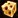
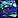
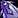
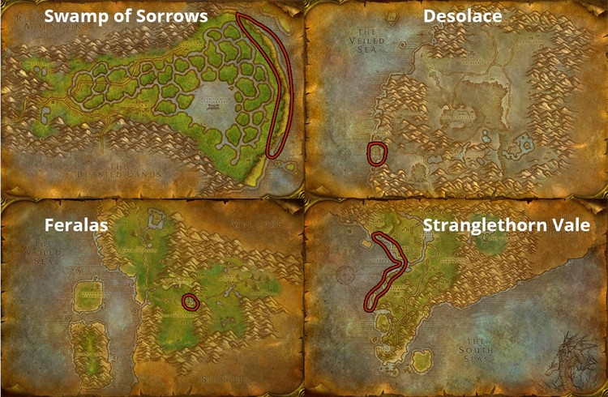
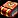
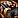
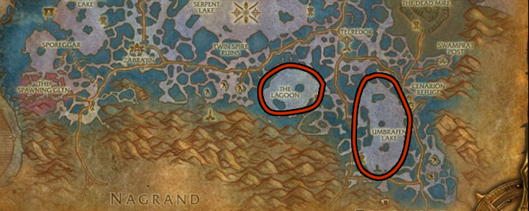
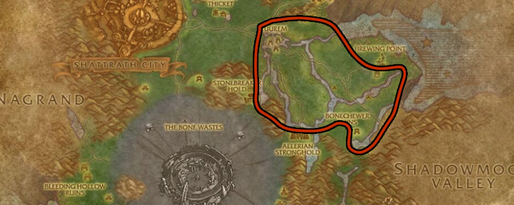
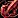
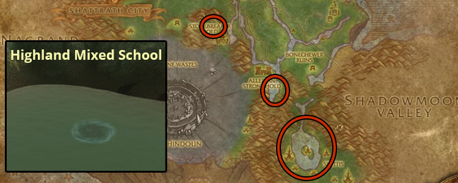

This Burning Crusade Classic Fishing and Cooking leveling guide will show you the fastest way to level Fishing and Cooking from 1 to 375.
This Burning Crusade Classic Fishing and Cooking leveling guide will show you the fastest way to level Fishing and Cooking from 1 to 375.
Since leveling your fishing takes a long time, it's best to level these professions together. You'll discover that it requires a lot of patience and time to build your skill level up to the maximum level. You will have to catch a lot of fish to get from start to finish.
I recommend trying Zygor's 1-70 Leveling Guide if you are still leveling your character or you just started a new alt. The guide will help you to reach level 70 a lot faster.
Level Fishing to 75
- Go to Bloodhoof Village in Mulgore and learn Cooking from Pyall Silentstride.
- Buy
 Recipe: Brilliant Smallfish and Recipe: Longjaw Mud Snapper from Harn Longcast
Recipe: Brilliant Smallfish and Recipe: Longjaw Mud Snapper from Harn Longcast - Buy
 Strong Fishing Pole and
Strong Fishing Pole and  Shiny Bauble from Harn Longcast. Fishing suppliers often sell 1-2
Shiny Bauble from Harn Longcast. Fishing suppliers often sell 1-2  Aquadynamic Fish Attractor, so buy them when they are available but keep them for later use when you will need a lot higher fishing.
Aquadynamic Fish Attractor, so buy them when they are available but keep them for later use when you will need a lot higher fishing. - Learn Fishing from Uthan Stillwater.
- Equip your fishing pole, attach a Shiny Bauble, and fish from Stonebull Lake until your fishing skill reaches 75. You will catch about 60
 Raw Brilliant Smallfish and some
Raw Brilliant Smallfish and some  Raw Longjaw Mud Snapper.
Raw Longjaw Mud Snapper. - Learn Journeyman Fishing from Uthan Stillwater.
- Go to Goldshire in Elwynn Forest and learn Cooking from Tomas. He is the cook inside the Lion's Pride Inn kitchen.
- Buy Recipe: Brilliant Smallfish and Recipe: Longjaw Mud Snapper from Tharynn Bouden
- Buy Strong Fishing Pole and Shiny Bauble from Tharynn Bouden. Fishing suppliers often sell 1-2 Aquadynamic Fish Attractor, so buy them when they are available but keep them for later use when you will need a lot higher fishing.
- Learn Fishing from Lee Brown. He is at the lake east of Goldshire.
- Equip your fishing pole, attach a Shiny Bauble and fish from any lake near Goldshire until your fishing skill reaches 75. You will catch about 60 Raw Brilliant Smallfish and some Raw Longjaw Mud Snapper.
- Learn Journeyman Fishing from Lee Brown.
Fishing (75-130) and Cooking (1-100)
Fishing
Go to Thunder Bluff and fish in the pond near Thunder Bluff's auction house until your skill reaches 130. You should catch about 20  Raw Brilliant Smallfish, 60
Raw Brilliant Smallfish, 60  Raw Longjaw Mud Snapper, and 30
Raw Longjaw Mud Snapper, and 30  Raw Bristle Whisker Catfish.
Raw Bristle Whisker Catfish.
Buy these
- Buy the Recipe: Bristle Whisker Catfish from Naal Mistrunner in Thunder Bluff.
- Buy 12x Giant Egg and 10x
 Zesty Clam Meat at the Auction House. You will need these later for the Artisan Cooking quest. (This step is optional, you can also farm these later in Tanaris)
Zesty Clam Meat at the Auction House. You will need these later for the Artisan Cooking quest. (This step is optional, you can also farm these later in Tanaris)
Cooking
- 1 - 50
Learn the recipeRecipe: Brilliant Smallfish, and cook all your fish. This should take your cooking skill to 50.
- 50 - 100
Learn Journeyman Cooking from Aska Mistrunner. Then learnRecipe: Longjaw Mud Snapper, and cook all your Longjaw Mud Snapper. Your cooking skill should rise to above 100.Don't worry if you don't reach 100 cooking with Longjaw Mud Snapper. You will catch more Raw Longjaw Mud Snapper later.
Buy these
- Buy 12x Giant Egg and 10x Zesty Clam Meat at the Auction House. You will need these later for the Artisan Cooking quest. (This step is optional, you can also farm these later in Tanaris)
- Find Catherine Leland in Stormwind City and buy Recipe: Bristle Whisker Catfish.
- Find Ben Trias and buy 20

Alterac Swiss from him. You will need these later for the Artisan Cooking quest.
Fishing
Fish in the canals of Stormwind City until your skill reaches 130. You should catch about 20  Raw Brilliant Smallfish, 60
Raw Brilliant Smallfish, 60  Raw Longjaw Mud Snapper, and 30
Raw Longjaw Mud Snapper, and 30  Raw Bristle Whisker Catfish.
Raw Bristle Whisker Catfish.
Cooking
- 1 - 50
Learn the recipeRecipe: Brilliant Smallfish and cook all your fish. This should take your cooking skill to 50.
- 50 - 100
Learn Journeyman Cooking from Stephen Ryback in Stormwind City. Then learnRecipe: Longjaw Mud Snapper, and cook all your Longjaw Mud Snapper. Your cooking skill should rise to above 100.
Don't worry if you don't reach 100 cooking with Longjaw Mud Snapper, you will catch more Raw Longjaw Mud Snapper later.
Fishing (130-205) and Cooking (100-175)
Booty Bay
- Fly to Ratchet in The Barrens. Then take a boat to Booty Bay in Stranglethorn Vale.
- Find Old Man Heming in Booty Bay and buy Expert Fishing - The Bass and You from him and read the book. (He is in the middle of Booty Bay at the very bottom part, near a fishing sign)
- Find Kelsey Yance and buy these two recipes: Recipe: Mithril Head Trout, Recipe: Filet of Redgill. (He is in the large building at the end of the ship dock in Booty Bay. Enter the building and make an immediate left.)
{kind=link}
Stonetalon Mountains
Go back to The Barrens, fly from Ratchet to Sun Rock Retreat in Stonetalon Mountains, and fish in the open water until your fishing skill reaches 205. You will catch about 95  Raw Longjaw Mud Snapper, and 145
Raw Longjaw Mud Snapper, and 145  Raw Bristle Whisker Catfish.
Raw Bristle Whisker Catfish.
Desolace
- Fly to Shadowprey Village in Desolace.
- Find Wulan and buy the Expert Cookbook. (He is on the top floor of the eastern-most building in the village.)
- Buy 20 Alterac Swiss from Innkeeper Sikewa. You will need them for the Artisan cooking quest.
Leveling Cooking to 175
Cook the Longjaw Mud Snapper if your cooking skill is still below 100.
Learn  Recipe: Bristle Whisker Catfish and make as many as you can. Your cooking skill will hopefully rise close to 175.
Recipe: Bristle Whisker Catfish and make as many as you can. Your cooking skill will hopefully rise close to 175.
IMPORTANT! Read the Expert Cookbook at 125.
Don't worry if you don't reach 175 cooking with Bristle Whisker Catfish. You will catch more Raw Bristle Whisker Catfish later.
Booty Bay
- Go to Booty Bay in Stranglethorn Vale.
- Find Old Man Heming in Booty Bay and buy Expert Fishing - The Bass and You from him and read the book. (He is in the middle of Booty Bay at the very bottom part, near a fishing sign)
- Find Kelsey Yance and buy these two recipes: Recipe: Mithril Head Trout, Recipe: Filet of Redgill. (He is in the large building at the end of the ship dock in Booty Bay. Enter the building and make an immediate left.)
Ashenvale
Go to The Barrens then fly from Ratchet to Astranaar in Ashenvale. Now ride south-east to Mystral Lake and buy the Expert Cookbook from Shandrina
Fish in the open water of Mystral Lake until your fishing skill reaches 205. You will catch about 95  Raw Longjaw Mud Snapper, and 145
Raw Longjaw Mud Snapper, and 145  Raw Bristle Whisker Catfish.
Raw Bristle Whisker Catfish.
Leveling Cooking to 175
Cook the Longjaw Mud Snapper if your cooking skill is still below 100.
Learn  Recipe: Bristle Whisker Catfish and make as many as you can. Your cooking skill will hopefully rise close to 175.
Recipe: Bristle Whisker Catfish and make as many as you can. Your cooking skill will hopefully rise close to 175.
IMPORTANT! Read the Expert Cookbook at 125.
Don't worry if you don't reach 175 cooking with Bristle Whisker Catfish, you will catch more Raw Bristle Whisker Catfish later.
Artisan Fishing Quest
-
Go to Dustwallow Marsh and fish in any inland open water until your skill reaches 225. (Do not fish in the ocean)
-
After you reach 225, go and find Nat Pagle and accept the quest
 Nat Pagle, Angler Extreme. (requires level 35 and Fishing 225). This quest is required for learning Artisan Fishing.
Nat Pagle, Angler Extreme. (requires level 35 and Fishing 225). This quest is required for learning Artisan Fishing.
To complete the quest, you have to catch 4 quest-only fish from different locations.

Feralas Ahi - Feralas
Misty Reed Mahi Mahi - Swamp of Sorrows- Sar'theris Striker - Desolace
- Savage Coast Blue Sailfin - Stranglethorn Vale
Nat Pagle, Angler Extreme Quest Fishes

Fishing (205-255) and Cooking (175-225)
-
After you complete the quest, keep fishing in Dustwallow Marsh until your Fishing skill reaches 255.
-
Go back to Brackenwall Village (Horde) / Theramore Isle (Alliance) to cook your fish.
-
Cook the Raw Bristle Whisker Catfish if your cooking skill is still below 175.
-
Learn
Recipe: Mithril Head Trout and make as many as you can. Your cooking skill will rise to 225. Stop cooking at 225 and keep any remaining Raw Mithril Head Trout.
Artisan Cooking Quest
-
Fly to Gadgetzan in Tanaris and pick up the quest
Clamlette Surprise from Dirge Quikcleave. The reward for this quest is Artisan Cooking. (The quest requires level 35+ with 225 Cooking.)You will need these to complete the quest:
- 12 x Giant Egg - Dropped by Roc, Searing Roc, and Fire Roc in Tanaris.
- 10 x Zesty Clam Meat - Dropped by Steeljaw Snapper in Tanaris
- 20 x Alterac Swiss - You bought this before already.
-
Find Gikkix in Tanaris and buy these recipes:
Recipe: Nightfin Soup, Recipe: Poached Sunscale Salmon, Recipe: Spotted Yellowtail
Fishing (255-300) and Cooking (225-285)
- Fly to Camp Mojache (Horde) / Feathermoon Stronghold (Alliance) in Feralas and buy the Recipe: Baked Salmon recipe from
 Sheendra Tallgrass /
Sheendra Tallgrass /  Vivianna.
Vivianna. - Fish in the marked lakes until you reach Fishing 300. Don't forget to use Lures to prevent the fish from getting away!
- Cook the remaining
 Mithril Headed Trout, then learn Recipe: Filet of Redgill and make as many as you can.
Mithril Headed Trout, then learn Recipe: Filet of Redgill and make as many as you can. - Learn the Recipe: Nightfin Soup and Recipe: Poached Sunscale Salmon recipes, then make as many as you can. (stop when they turn grey)

Learning Master Fishing in Outland
- Travel to Cenarion Refuge in Zangarmarsh.
- Buy

Master Cookbook from Naka in the inn. - Buy Recipe: Blackened Sporefish and

Master Fishing - The Art of Angling from Juno Dufrain in Zangarmarsh. He is standing by the lake. - Read Master Fishing - The Art of Angling to learn Master Fishing. (You can't learn Master Cooking yet)
- If you are out of lures, you can buy
 Bright Baubles from Juno Dufrain.
Bright Baubles from Juno Dufrain.
Getting a better Fishing Pole
You will need around 400 effective fishing skill (including bonuses from poles and lures) to stop fish from getting away in Zangarmarsh, so you will need to get one of these fishing poles:
(+20 Fishing) | Reward from the |
| Reward from the | |
| You can buy it from the Auction House. But it can be really expensive, so it's not always worth buying it. |
If you can't get any of the fishing poles above, some of your fish will get away, and you will level a lot slower. So, you should either fish in one of the previous Azeroth zones, or you can try to buy a bunch of  Aquadynamic Fish Attractor from the Auction House and use them until around 325, then you can switch to
Aquadynamic Fish Attractor from the Auction House and use them until around 325, then you can switch to  Bright Baubles.
Bright Baubles.
Fishing 300-330 in Zangarmarsh
Fish in Zangarmarsh at these two lakes in the picture below until your fishing skill reaches 330.
Far fewer fish are required to level cooking than you will catch.  Barbed Gill Trouts are not used in the guide. But, save all your Zangarian Sporefish and save at least 10x
Barbed Gill Trouts are not used in the guide. But, save all your Zangarian Sporefish and save at least 10x  Spotted Feltail. (keep all the
Spotted Feltail. (keep all the  Enormous Barbed Gill Trout and
Enormous Barbed Gill Trout and  Huge Spotted Feltail Off-hand you caught)
Huge Spotted Feltail Off-hand you caught)

Cooking 275-300 in Eastern Plaguelands
Go to Eastern Plaguelands and Fish in any of the lakes until you catch enough  Raw Whitescale Salmon to reach Cooking 300. 40% of your catches will be Raw Whitescale Salmon, so this should only take around 10-15 minutes.
Raw Whitescale Salmon to reach Cooking 300. 40% of your catches will be Raw Whitescale Salmon, so this should only take around 10-15 minutes.
I recommend going to Zangarmarsh first and coming back to Eastern Plaguelands because Eastern Plaguelands requires higher fishing skill than Zangarmarsh. You will need Fishing skill 425 to stop fish from getting away completely, so keep using lures.
Cooking  Baked Salmon gives guaranteed skill points up to 300. So, for example, if you have 280 cooking skill, you have to catch 20x
Baked Salmon gives guaranteed skill points up to 300. So, for example, if you have 280 cooking skill, you have to catch 20x  Raw Whitescale Salmon.
Raw Whitescale Salmon.
Zangarmarsh
Fishing 330-350
Go back to Zangarmarsh and Fish until 350 in the same two lakes as before.
Cooking 300-340
- Use the Master Cookbook to learn Master Cooking.
- Buy the Recipe: Feltail Delight from Zurai / Doba, then cook 10x
 Spotted Feltail
Spotted Feltail - Learn the Recipe: Blackened Sporefish, then cook Zangarian Sporefish until you reach 340.
Kurenai Reputation
Alliance characters start as 'Unfriendly' with the Kurenai, so you can't buy recipes from  Doba if you haven't completed any quests in Zangarmarsh yet.
Doba if you haven't completed any quests in Zangarmarsh yet.
- Talk to Ikuti at the Orebor Harborage. Pick up Ango'rosh Encroachment and Daggerfen Deviance from him.
- Interact with the Wanted Poster near Ikuti and pick up the Wanted: Chieftain Mummaki quest. (if you face him, the poster is to your left)
- Completing these 3 quests will give you enough reputation to reach Neutral with the Kurenai faction then Doba will sell you his cooking recipes.
Terrokar Forest
Fishing 350-370
Level Fishing until 370 in any water inside the marked area in Terokkar forest. Don't go to flying restricted areas or the lake near Shattrath City yet because they require a lot higher fishing skill!

Cooking 340-360
- Buy the Recipe: Golden Fish Sticks and the Recipe: Spicy Crawdad recipe from Innkeeper Biribi / Rungor.
- Learn Recipe: Golden Fish Sticks, then cook all your
 Golden Darter. Your cooking skill will be around 360.
Golden Darter. Your cooking skill will be around 360.
Highland Mixed School
- Fly up to Blackwind Lake, Lake Ere'Noru, or Lake Jorune in Terokkar Forest.
- Fly around these three lakes while looking for Highland Mixed Schools.
- Fish in Highland Mixed Schools until you have caught enough

Furious Crawdad to reach cooking skill 375. (don't fish in the water normally, you can only get them from Schools) - If you reach 375 cooking before 375 fishing, go back to the lower part of Terokkar to complete fishing in easier waters, where you can fish without get-aways.

Congratulations on reaching 375! Please send feedback about the guide if you think there are parts I could improve or if you found typos, errors, or wrong material numbers!